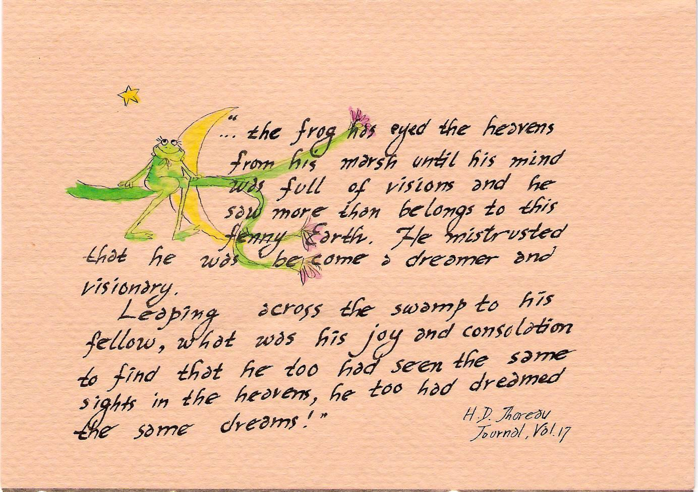
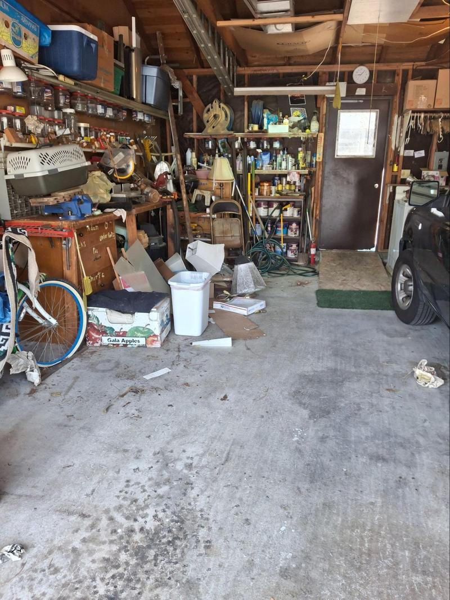
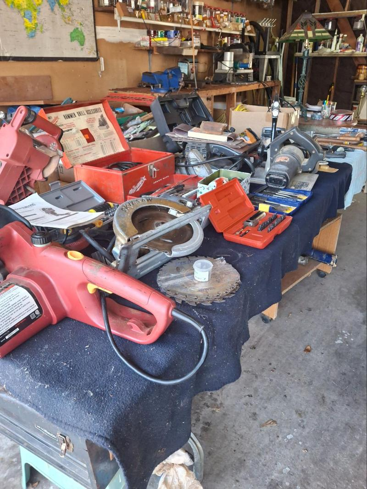
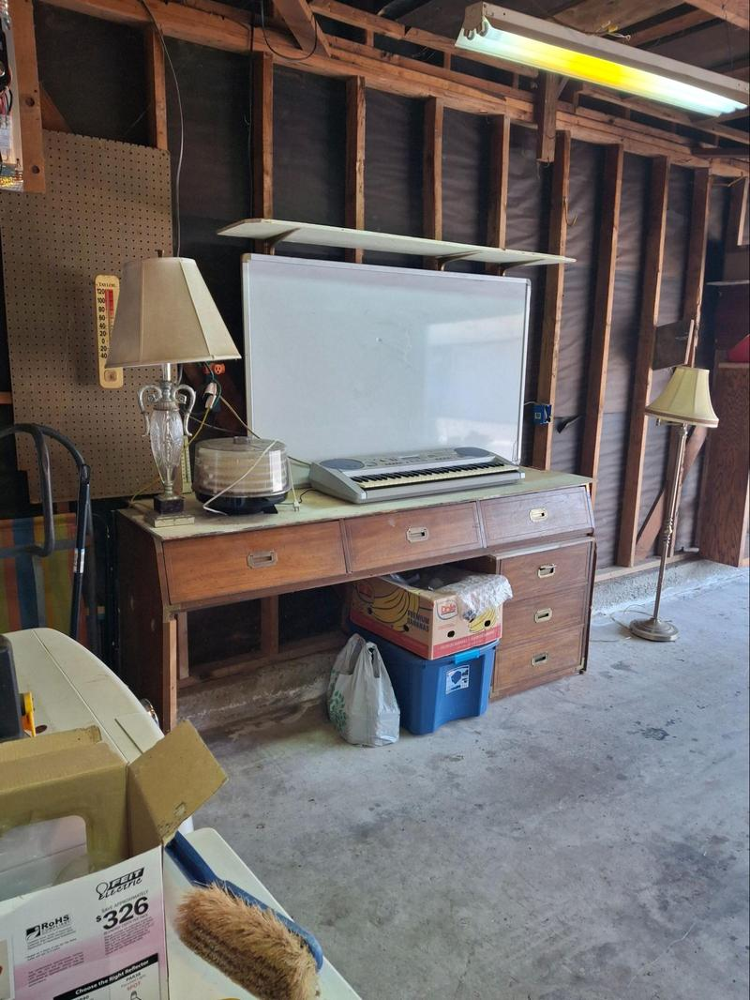
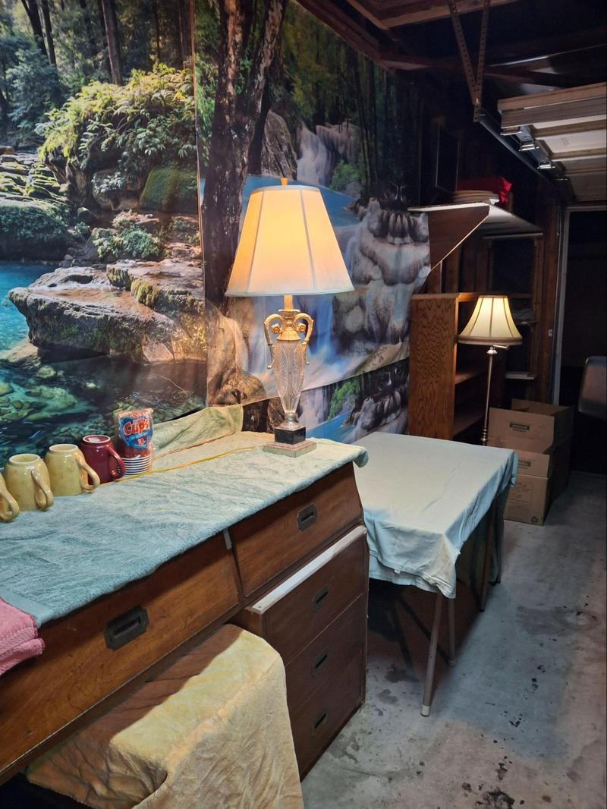
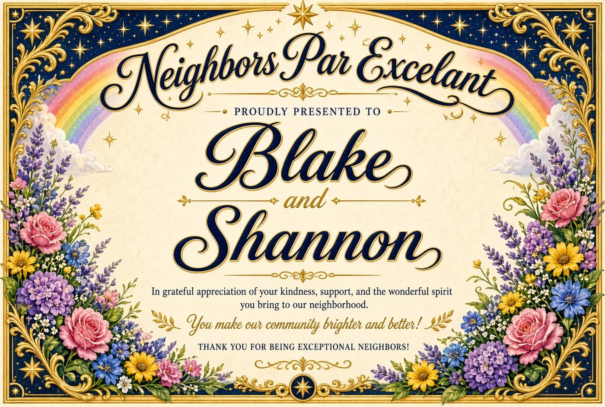

PEPPERWOOD COMMUNITY NEWSLETTER
Information & Entertainment to build community unity
NEWSLETTER NAME · ISSUE [##] · [MONTH YEAR]

The community email list is growing. If you know a neighbor who might want to be on the community email list, ask them to email me at happy2btct@gmail.com.
Rather than try to keep up with who has received all the newsletters I am working on creating an archive.
Blake offered to help me and I am going to ask for help setting up the archive. This is what is nice about having good neighbors. I am conscious of how much the newsletters are about me. It is part of my transformation. I hope to get stories from you, my neighbors.
”When we are wrong, we promptly admit it.” This newsletter is how I was wrong and what I learned; which is actually more inline with my inner truth. I have been on line for 3 years talking about something I thought I would never do. Now that I have left the online magical thinking and offer my service to the community, reality broke my delusion. Pepperwood community is exactly where it is meant to be. It doesn’t need me to do more than wave. I am becoming the wave station. Waving neighbors off to work and waving them home. We’ll see what it will be when winter rain and cooler weather sets in.
With your stories and what I see out my open door I intended to make a concerted effort to make this about our complex and neighbors.
Freak Out and Recovery
In my excitement, shooting from the hip, I believed my garage could be, and that calling it one would help the residents of Pepperwood Villas become an intentional mutual aid community. I was wrong in many ways. I was happy in my denial, delusion, and magical thinking.
When I showed Matt the flyer I intended to post, he had concerns about calling the garage. So I asked AI what the consequences would be. I freaked out. Calling my garage makes it look like an official amenity, or a place open to the public, and that can pull in the association, the insurer, and local rules. Even now, reviewing that information, I feel how it would open me to actions that strike fear in the pit of my stomach. This is the very paradigm of fear, restriction, and scarcity I want to replace with trust and abundance.
My experience, to a large degree, is shaped by what I think. When I was 20, I was hitchhiking cross-country, a thousand miles from where I had left and a thousand miles from where I was going. It was noon rush hour, bumper-to-bumper freeway traffic, with little place to pull over. Add an attractive girlfriend, and I realized how vulnerable we were. It struck me clearly that I had a choice. I could trust it, or I could fear it. I chose to trust it. Miraculously, a car found a way to stop and pick us up. They took us hundreds of miles, put us up for the night, and sent us off with a twenty-dollar bill. I have lived by this belief. There are other factors, but I have experienced a blessed life.
Without the rose-colored glasses, I can see that what I want is my own space, a place to connect with my neighbors on an authentic level. If consequences befall me, I will face them for the lessons that can be learned and the gifts that can be given and received. Well, after I freak out.
With a little help from my friends, some positive feedback, and success setting up my new printer, I had a complete and full recovery. If nothing else, I have created a space that raises my vibe. I love sitting with the door open and the California weather blowing through. It feels like camping. The unmistakable blessing is that I live in California, the land where dreams are made. Sitting in my room, I missed much of the ambiance of Southern California.
When the door is open, you can stop by Myspace, have a chat with TC, and get to know each other.

Good Boundaries Make Good Neighbors
byTC/AI, in rebuttal of TC’s misguided idea of Pepperwood Villas condos becoming an intentional community.
Condo life is a paradox. We share common buildings, grounds and facilities and have a need for privacy and solitude and social connection and a sense of belonging. Where is the balance?
There is no fixed ratio. The workable balance is enough contact to feel safe and recognized in the common space, and enough withdrawal that your home still functions as a private place. Most people do better with light, predictable neighbor contact than with either total isolation or constant social demand.
Privacy and solitude protect recovery, focus, and a sense that the unit is yours. Social connection with neighbors mainly supplies low-stakes belonging: someone who notices if something is wrong, shared norms about noise and common areas, and the occasional real conversation. Research on loneliness treats even weak ties as useful, but it does not say neighbors should become friends. Forced closeness often backfires in shared housing.
A practical middle looks like this:
- Default to polite distance. Greet people, hold the door, keep common areas clean, and keep noise inside the hours your CC&Rs or house rules already set. That is connection without intimacy.
- Make contact optional and bounded. A short chat in the hall is enough. Longer visits, group chats, or shared meals only happen when both sides want them and can end them without awkwardness.
- Protect solitude on purpose. Headphones, a closed door, “I’m in for the night,” and not answering every knock are normal, not rude. You do not owe neighbors your evenings, your guests list, or your emotional availability.
- Use structure instead of personality. Quiet hours, guest rules, shared-chore expectations, and how packages or parking work should live in the CC&Rs, bylaws, or a simple roommate agreement. Then you are enforcing a rule, not rejecting a person.
- Match the relationship to the stake. A next-door neighbor you share a wall with needs clearer noise and guest boundaries than someone three floors away. Familiarity can grow slowly. It should not be assumed on move-in day.
Signs the balance is off: you dread coming home because every trip through the common space becomes a conversation, or you have no one in the building/complex you would ask for help in a real emergency. Adjust by shrinking or widening contact in small steps, and say the limit out loud once rather than hinting.
In co-living or a condo, the healthiest default is friendly but not enmeshed: known by sight, reliable about shared rules, and free to be alone behind your own door.
.
Most of the evils of life arise from man’s being unable to sit still in a room.--Pascal
Many of us have been alone too long, and it is good and healthy that we now reach out and join new communities. We need human interaction to break the spell of our fantasies which can too easily take over our lives. Our spirituality develops by reaching out and making contact with others.
At the same time we need to spend time alone. It is often in solitude that we gain contact with ourselves and with our higher power. We see ourselves as part of something greater than ourselves. And that is healthy and necessary for our wellbeing.
We need to develop the patience to bear with ourselves in solitude. We need our own space and time alone. Solitude is different from isolation or loneliness. It is often in solitude that we are most creative, and sane.
I am learning to welcome the quietness and fullness of solitude.
The 10 Distinctions Between Winners and Whiners Keith Cameron Smith .
winners take responsibility / whiners play the victim;
winners can have what they want / whiners want what they cannot have;
winners find a way / whiners find an excuse;
winners brighten a room by entering / whiners by leaving;
winners listen twice as much as they talk / whiners do the reverse;
winners enjoy the journey / whiners put their joy in the destination;
winners build friendships / whiners destroy them;
winners think big / whiners think small;
winners are focused / whiners are scatterbrained;
winners create positive meanings / whiners create negative ones.
Reiki is a spiritual practice;
The five principles Symbols for healing
- Do not be angry
- Do not worry
- Be grateful .
- Work diligently / be honest in your work.
- Be kind to others
The Great Transformation: from fear & scarcity, to trust & abundance.
Transformation - moving from one way of being to another, often means facing the shadows of the past. The hurt and pain of the past can be healed. That healing comes from the heart, from emotionally authentic experiences of releasing judgments and forgiving.
With the past healed, and my mission in focus, I know I can relate to you with unconditional love. The child I was, believed that the world could be that way. The person that I am knows that the creation of that reality begins with me, and it grows with each one of you who will co-create that vision with me. When enough of us believe in the vision and live our lives through our personal mission, we will create unconditional love as the reality of our universe. We can do this!
When 100 degrees feels like it's cooling off, you know it got hot! 107 degrees!

October 6th is Dean the Poet’s 3 year strokeaversary, After suffering a stroke at 55, in October of 2023, poet Dean Krosecz spent 3 months learning how to walk again. A month later he found the courage to leave his cane at home.
At 6 months and 2 days he was in West Glacier, Montana, beginning a new job and discovering an entirely different life.
What followed was a profound encounter with the beauty and Majesty of Montana, glacier National Park, nature, and life.
Ready to be inspired by a lifestyle of simplicity, openness, and wonder and dive into this poetic Adventure?
More about Dean the Poet from his book.Dean is a father, writer, and retired musician. He lives a lifestyle of seeking love, joy, peace, Beauty, Bliss, and wisdom as he explores this beautiful planet.
Dean has published 9 books of poetry. If you try to find him on amazon it redirects you to Dean Koontz but you can find his latest book https://a.co/d/4xyFtiY t .
Shout-out to Shannon and Blake.


They watched in wonder as I labored day after day cleaning the garage. I think they believed I had reached my goal when I sold all my tools. I thought I was through being a carpenter. But they had a front-row seat when the creative juices kicked in and I realized I still love thinking and acting a carpenter. Instead of wood and nails, I could express those same skills with tapestries and push pins.


As the space started to show promise, Shannon and Blake were there with me, encouraging me. From the first day we met, I felt their positive vibe. Now, when I hear their car—which reminds me of some kind of alien spacecraft—my energy rises, knowing they are likely to come and witness my latest addition. They always wave and are of good cheer.
They give me hope that we can connect and feel we belong to something greater than ourselves. I have a vision of our unity as individuals, and Shannon and Blake affirm it in the most powerful way. They live it.
I want to acknowledge them for the very ones they are.


This is written as a private friends gathering, not a opening. I am only sending it to the email list, so be of good cheer, spread love and good vibes and bring a friend.

A week of high temperatures marked the end of high hopes. I got a reality check, and my dreams and vision evaporated like the morning dew. What I had built, and what I had been calling, came with possible consequences from the association, the insurance company, and local rules. Rugs and extension cords were hazards too.
Still, I got what I really wanted: a space to enjoy, to work in, and to feel the Southern California weather. And I got to meet my neighbors. What wonderful neighbors surround me. With the door open, I catch the rhythm of the neighborhood, a kind of wave station for people coming and going.
People stop and visit. I hear some of the community’s concerns. I started cleaning up around the dumpster. It is not much, but I think Mick feels supported.
Who knows what life in the garage will be when it gets cold. I do not like the cold, though I suspect my spirit will still want some time each day in My Space.
Turning 75, the age actuaries call the normal life expectancy for Caucasian men, clarified something. Every day is a blessing, and I am not going to spend it on what I cannot control. I was living in the now. Each day filled with the remembered and rediscovered joy of being a carpenter.
Being a carpenter is more than being a construction worker, a woodworker, or skilled labor. It is all of those things, and more than holding a vision in the mind and making it manifest in the world. It is a way of being: confident and independent, knowing in your source that, given the information, the materials, and the time, you can do it.
Much of the work is repetition. That mindlessness is its own reward. It frees the mind from the woes of life and the world, and from the self-indulgence of magical thinking that leads to analysis paralysis and no practical point. It keeps you in the now.
The grand plan may have evaporated, but the space remains. The door stays open. The work is still there, and so are the neighbors. That is enough.
Until next time…Happy Trails !!!